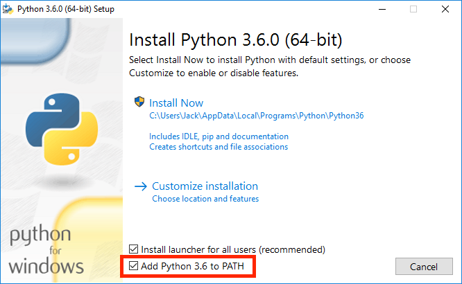

Introduction
This lab explains how to use your own computer to complete assignments for CS 61A, as well as introduce some of the basics of Python. If you are using a lab computer, most of the instructions are the same, except you won't have to install anything.
If you need any help at any time through the lab, please feel free to come to one of the TAs.
This lab looks really long, but it's mostly setup and learning how to use essential tools for this class; these may seem a bit difficult now, but it will quickly become second nature as we move further into the course.
Setup
Install a terminal
The terminal is a program that allows you to interact with your computer by entering commands. No matter what operating system you use (Windows, macOS, Linux), the terminal will be an essential tool for coding.
macOS/Linux
If you're on a Mac or are using a form of Linux (such as Ubuntu), you already have a program called Terminal or something similar on your computer. Open that up and you should be good to go.
Windows
For Windows users, we recommend a terminal called Git-Bash. You can try either method below:
Easy (automatic) method: Download and run our automatic installer, and follow the displayed instructions.
(Advanced users): If double-clicking doesn't work, you can try cscript "Install-Python-on-Windows.jse" from the Command Prompt.) If this method succeeds, you can move on and install a text editor; you now run Python inside Git-Bash. (In fact, only inside Git-Bash. So this won't let you run .py files by double-clicking them. But you shouldn't need to do that for this course.) If this method fails, try the alternate method below. Anti-virus note: Some anti-viruses mistakenly flag our installer as a virus. We're aware of this, but there's little we can do to prevent it. In the case of Windows Defender, some students have reported success by clicking "See Details", letting it scan the file, and then rebooting. Otherwise, you can try to exclude/whitelist the file from scanning. If neither of these work for you or you aren't comfortable messing with your anti-virus software, you can just use the manual installation method below.
Alternate (manual) method: First, if you already tried the automatic installer above, make sure it's fully cleaned up:
1. Look for Git as an installed program in "Add/Remove Programs", and, if it exists, uninstall it.
2. Once Git is no longer installed, if a C:\Program Files\Git folder still exists, delete that too. Now download and install Git Bash. You can use the default options, with one exception: Select Use Windows' default console window in the Configuring the terminal emulator to use with Git Bash step. This is very important! If you do not select this option, your terminal won't work with Python!

If you're already using Git-Bash from outside this course and reinstalling it isn't an option:
Depending on whether you selected the MinTTY option when installing Git, it's possible that typing a command like python won't display anything on the screen. You can fix this by typing winpty python instead (or winpty python3, etc. as described below), but it will be painful, as you will have to remember to do this every time for the rest of the course! Hence we recommend that you go back and reinstall Git-Bash with the recommended options if at all possible.
If everything succeeded, you are now able to launch a terminal on Windows by running Git-Bash.
SSL/TLS errors: If you ran into connection security errors, you may need to update your system and/or enable TLS 1.2 (e.g. see here for Windows 7). You can check your TLS version by installing Python first, and running the following in python3: from json import loads; from urllib.request import urlopen; loads(urlopen('https://www.howsmyssl.com/a/check').read().decode('UTF-8'))['tls_version'] If you don't see TLS 1.2 or later, that may be why you are encountering problems. If you're on Windows 10, though, the problem may be something else, and you may need to search/ask for help.
Install Python3
Python 3 is the primary programming language used in this course. Use the instructions below to install the Python 3 interpreter.
(The instructions may feature older versions of Python 3, but the steps are similar.)
Linux
Run sudo apt install python3 (Ubuntu), sudo pacman -S python3 (Arch), or the command for your distro.
macOS
Download and install Python: for Windows click here, for Mac or Linux click here. Refer to this video for additional help on setting up Python.
You may need to right-click the download icon and select "Open". After installing please close and open your Terminal.
Windows
If you used our automated instaler successfuly, skip to the next section-you should already have Python.
Otherwise, if you're installing manually, download Python and make sure to check the "Add Python 3.x to PATH" box, which will allow you to execute the python command from your terminal.
After installing please close and open your Terminal. 
Install a text editor
The Python interpreter that you just installed allows you to run Python code. You will also need a text editor, where you will write Python code.
There are many editors out there, each with its own set of features. We find that Atom and Sublime Text 3 are popular choices among students, but you are free to use other text editors.
Using the terminal
Let's check if everything was installed properly!
First, open a terminal window. (If you're on Windows, launch Git-Bash from the Start menu.)
Important: You should see a $ sign, waiting for you to type commands.
If you see a > sign (such as C:\Users\Oski>), you are not running Bash; you are in the Windows Command Prompt! Do not use that! Close it, and launch Git-Bash instead. (Do not launch Git-CMD.)

When you first open your terminal, you will start in the home directory. The home directory is represented by the ~ symbol.
Don't worry if your terminal window doesn't look exactly the same; the important part is that the text on the left-hand side of the $ has a ~ (tilde). That text might also have the name of your computer. If you see your home directory instead of ~: Try running echo ~. If it displays the same path, that's also fine.
Python Interpreter
We can use the terminal to check if your Python 3 interpreter was installed correctly. Try the following command: python3
If the installation worked, you should see some text printed out about the interpreter followed by >>> on its own line. This is where you can type in Python code. Try typing some expressions you saw in lecture, or just play around to see what happens! You can type exit() or Ctrl-D to return to your command line. Remember to ask for help if you run into trouble!
Conclusion
Congratulations! You have officially setup your own personal coding environment! Now next time in class, we will go into learning terminal commands and how to use the text editor with our terminal!